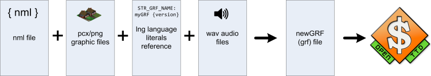

NewGRF files are files containing sprites and pseudo-sprites that can be used to describe extra vehicles, industries, cargoes etc. for use in OpenTTD and TTDPatch. The most used tool to encode/decode GRF files is GRFCodec (nightly download). GRFCodec can read NFO files and convert them to GRF files (GRF file format). NFO is a low-level language that is tied to the GRF spec. It uses hexadecimal numbers by default in most places and doesn't have any textual identifiers. While the language is very powerful, it's also hard to learn. NML was started mainly to provide a higher level language so coding GRF files will become accessible to more people.
A good place to discuss NewGRFs which are being developed are the tt-forums, especially the NewGRF sub-sections. Questions concerning setup up of NewGRF projects, programming or drawing or just discussing features and presenting work being done are well-placed there. When you are satisfied with a NewGRF and consider it tested enough that it really can be considered to be played with by the general public, you can publish your NewGRF in the NewGRF releases sub-forum and you might also consider to publish it to the Online Content Server of OpenTTD, so that other players can easily download your NewGRF and use it for future games. It will increase the popularity and use of your NewGRF tremendously.

NML is a a python-based compiler, capable to compile NML files (along with their associated language, sound and graphic files) into grf and / or nfo files. In order to work, it requires
python setup.py install from your
command prompt.
Examples for small NML "projects" are found in the regression
folder of NML. Generally it's assumed that the language files are in a separate
language folder lang, thus a simple project may look like this:
mynewgrf.nml graphics.png funny_sound.wav lang/default.lng
The compiler itself nmlc is a command line tool and can
take a number of parameters, at least the nml filename which it shall process,
e.g. nmlc mynewgrf.nml will compile your nml file into
the grf-file mynewgrf.grf.
The full syntax is:
Usage: nmlc [options] <filename>
Where <filename> is the nml file to parse
Options:
--version show program's version number and exit
-h, --help show this help message and exit
-d, --debug write the AST to stdout
-s, --stack Dump stack when an error occurs
--grf=<file> write the resulting grf to <file>
--nfo=<file> write nfo output to <file>
-c crop extraneous transparent blue from real sprites
-u save uncompressed data in the grf file
--nml=<file> write optimized nml to <file>
-o <file>, --output=<file>
write output(nfo/grf) to <file>
-t <file>, --custom-tags=<file>
Load custom tags from <file> [default:
custom_tags.txt]
-l <dir>, --lang-dir=<dir>
Load language files from directory <dir> [default:
lang]
All graphic files must be in a format that can be loaded by the python imaging library and they must have a valid palette. You can chose either the DOS palette (recommended as it contains a few more colours) or the windows palette.
Palette files for several editors:
NML files are mainly composed from blocks. A block starts with the type of the block, optional arguments and then the contents enclosed by curly braces. Nearly all NML files will start with a grf-block. The grf-block takes no parameters and is one of the simplest blocks there is. Following is an example grf-block.
grf {
grfid : "AB\02\03";
name : string(STR_GRF_NAME);
desc : string(STR_GRF_DESCRIPTION);
version: 10;
min_compatible_version: 5;
}
Let's look at this code line for line.
grf {
This block is a grf-block. A grf-block has no parameters. The '{' is the start of the block content.
grfid : "AB\02\03";
This line sets the grfid of the resulting grf. The value is the letters AB followed by a byte with value 2 and then another one with value 3. The semicolon marks the end of the statement.
name : string(STR_GRF_NAME);
The name of the grf. In NML nearly all strings are put in
language files. The format of the language files
is described in another section. For now just assume a string with the name
STR_GRF_NAME exists. To reference a string from the language file
you use string(<stringname>) where <stringname>
should be replaced by the actual name of the string.
desc : string(STR_GRF_DESCRIPTION);
This looks a lot like the previous line, only it sets the description instead of the name.
version : 10;
For a new grf you should set the version to 1. Every time you release a new version you should increase the version field by at least 1.
min_compatible_version : 5;
For a new grf you should set the min_compatible_version to 1. Every time you change something in your newgrf which makes it incompatible to previous versions, you should set min_compatible_version to the current version. Changes which make a NewGRF incompatible to previous versions are most functional changes to existing behaviour, among others: changing vehicleIDs as well as some of their properties, changing industry layouts, railtype compatibility, changing (de-)activation conditions... Adding new, additional things and expanding existing behaviour (without changing the current one) is mostly considered safe).
}
This marks the end of the last-opened block, in this case the grf-block.
NewGRFs can be used to modify various types of items. Examples include trains, stations and industries. Such a type of item is called a feature. The following table contains a list of features and their identifiers. These identifiers may be used to refer to the feature when needed.
| Name | Description |
|---|---|
| FEAT_TRAINS | Trains |
| FEAT_ROADVEHS | Road vehicles |
| FEAT_SHIPS | Ships |
| FEAT_AIRCRAFT | Aircraft |
| FEAT_STATIONS | Train stations |
| FEAT_CANALS | Canals |
| FEAT_BRIDGES | Bridges |
| FEAT_HOUSES | Town houses |
| FEAT_GLOBALVARS | Various global variables |
| FEAT_INDUSTRYTILES | Industry tiles (visible part of industries) |
| FEAT_INDUSTRIES | Industries |
| FEAT_CARGOS | Cargo types |
| FEAT_SOUNDEFFECTS | Sound effects |
| FEAT_AIRPORTS | Airports |
| FEAT_SIGNALS | Train signals |
| FEAT_OBJECTS | Non-interactive objects (example: lighthouse) |
| FEAT_RAILTYPES | Rail types |
| FEAT_AIRPORTTILES | Airport tiles (visible part of airports) |
In the next sections you'll often see a word enclosed by the less-than and greater-than symbols. These words should not be written literally, instead they reference to another block/item you should put there. The following words will be used:
"this is a literal string"string(STR_GRF_NAME)If something is enclosed by square brackets [] it's optional.
grf {
grfid: <literal-string>;
name: <string>;
desc: <string>;
version: <expression>;
min_compatible_version: <expression>;
<param { ... }>
}
Example:
grf {
grfid: "AB\03\02";
name: string(STR_GRF_NAME);
desc: string(STR_GRF_DESC);
version: 1;
min_compatible_version: 1;
}
As part of the grf block you can specify some parameter settings that the user will be able to change as part of the newgrf configuration. These can for example be used to disable parts of your NewGRF or to change between multiple graphics in case that's not possible at runtime. In general the settings (sub-)block looks like
param {
<name> {
type: <type>;
name: <string>;
desc: <string>;
min_value: <expression>;
max_value: <expression>;
def_value: <expression>;
names: {
0: <string>;
1: <string>;
.
.
.
};
}
}
Looking at the single entries:
<type>This defines the parameter type. Possible values are
bool for on/off statements
or int for positive integer values
nameThis gives the parameter name as shown in the parameter configuration dialogue of OpenTTD.
descThis gives the description which is displayed when the parameter is selected. Here you can explain the meaning and impact it will have
min_valueThe minimum acceptable value for the parameter (makes only sense for type int)
max_valueThe maximum acceptable value for the parameter (makes only sense for type int)
def_valueThis sets the default value for this parameter. If left out, the default value of 0 will be used.
namesIf you chose type
int and the numbers themselves are only used internally, have
no direct numerical meaning and are better explained in words, you can use this to associate
the single numbers with a string which describes it and is shown to the user instead of the
value.
A simple example:
param {
param_provide {
type: int;
name: string(STR_PARAM_PROVIDE);
desc: string(STR_PARAM_PROVIDE_DESC);
min_value: 0;
max_value: 1;
def_value: 0;
names: {
0: string(STR_PARAM_PROVIDE_ENGINES_AND_WAGONS);
1: string(STR_PARAM_PROVIDE_WAGONS_ONLY);
};
}
item (<expression> [, <ID> [, <expression>]]) {
(<property-block>|<graphics-block>|<livery_override-block>)+
}
The first argument is the feature of the item, the second (optional) argument is the name used to identify the object throughout the NML file and the third (optional) argument is the numerical id you want to use for this item. Example:
item (FEAT_ROADVEHS, hereford_tram) {
property {
name: string(STR_NAME_HEREFORD_TRAM);
climates_available: ALL_CLIMATES;
introduction_date: date(1940,1,1);
speed: 60 km/h;
}
}
property {
(<ID>: (<string>|(<expression> [<unit>]));)+
}
This one looks a lot more complicated than it actually is. A property-block contains one or more assignments. Each assignment starts with the name of the property that is changed followed by a colon. After the colon follows the value and you end the line with a semicolon. The type of the value depends on the property, some properties require a string as value and some an expression. For some properties you can optionally specify a unit that is used to convert the value to the unit that is written to the output file. You can only use a unit if the expression is constant. List of valid units
A livery override block offers the option to change the look and behaviour of a wagon depending on the engine it is attached to. E.g. passenger wagons could adapt their livery to match the engine, to make the consist look like a multiple-unit train. The spritegroup needs to be defined before it can be used in a livery override. A livery override block is always part of the engine definition and looks like
livery_override (vehicleID) {
spritegroup_name
}
For an example see the spritegroup
spriteset (SPRITESET_NAME, graphics_file) {
[left_X, upper_Y, width, height, offset_X, offset_Y]
...
}
spritegroup spritegroup_name {
block_name: spriteset_names
}
The block_names vary by the feature:
spritegroup spritegroup_name {
loading: [spriteset_name [, spriteset_name [, spriteset_name [, spriteset_name]]]]
loaded: [spriteset_name [, spriteset_name [, spriteset_name [, spriteset_name]]]]
}
Vehicles take two different spritesets, loading shows the vehicle while
it is loading within the station and loaded shows the vehicle while it is travelling.
Each of those can be an array of up to 4 individual spritesets and must at least be one. They're
used to show different graphics depending on how much the vehicle is loaded with increasing load
from left to right. If only one spriteset is given it will always be used.
A simple example for defining a train engine with a livery override. The passenger wagon shows
different sprites whether it is travelling empty or is filled with people.
// Define the sprites for the engine
spriteset(turbotrain_engine_set, "src/gfx/turbotrain.png") {
[142,112, 8,22, -3,-10]
[158,112, 21,15, -14, -7]
[190,112, 31,12, -16, -8]
[238,112, 21,16, -6, -7]
[270,112, 8,24, -3,-10]
[286,112, 21,16, -15, -6]
[318,112, 32,12, -16, -8]
[366,112, 21,15, -6, -7]
}
// Define the sprites for the passenger wagon when used with this engine
// Loading sprites with open doors
spriteset(turbotrain_passenger_loading_set, "src/gfx/turbotrain.png") {
[142,139, 8,21, -3,-10]
[158,139, 20,15, -13, -7]
[190,139, 28,10, -12, -6]
[238,139, 20,16, -6, -7]
[270,139, 8,21, -3,-10]
[286,139, 20,15, -15, -6]
[318,139, 28,10, -16, -6]
[366,139, 20,16, -6, -7]
}
// Passenger wagon is empty. No people shown
spriteset(turbotrain_passenger_traveling_empty_set, "src/gfx/turbotrain.png") {
[142,159, 8,21, -3,-10]
[158,159, 20,15, -13, -7]
[190,159, 28,10, -12, -6]
[238,159, 20,16, -6, -7]
[270,159, 8,21, -3,-10]
[286,159, 20,15, -15, -6]
[318,159, 28,10, -16, -6]
[366,159, 20,16, -6, -7]
}
// Passenger wagon is full. Show people through the window
spriteset(turbotrain_passenger_traveling_full_set, "src/gfx/turbotrain.png") {
[142,159, 8,21, -3,-10]
[158,159, 20,15, -13, -7]
[190,159, 28,10, -12, -6]
[238,159, 20,16, -6, -7]
[270,159, 8,21, -3,-10]
[286,159, 20,15, -15, -6]
[318,159, 28,10, -16, -6]
[366,159, 20,16, -6, -7]
}
// Associate graphics with the engine for the different loading stages
spritegroup turbotrain_engine_group {
loading: turbotrain_engine_set;
loaded: turbotrain_engine_set;
}
// Associate graphics with the wagon for the different loading stages
spritegroup turbotrain_passenger_group {
loading: turbotrain_passenger_set;
loaded: [turbotrain_passenger_traveling_empty_set, turbotrain_passenger_traveling_full_set];
}
// Define new graphics for the turbotrain (it has vehicleID 20):
item(FEAT_TRAINS, turbotrain, 20) {
property {
sprite_id: SPRITE_ID_NEW_TRAIN; // We have our own sprites
misc_flags: bitmask(TRAIN_FLAG_MU); // We use special sprites for passenger and mail wagons
}
graphics { // graphics for engine
turbotrain_engine_group;
}
livery_override(passenger_wagon) { // graphics for alternative look of passenger wagon when used with this engine
turbotrain_passenger_group;
}
}
default is used and it only takes one spriteset.
spritegroup gui_normal_modern_TTD_group {
default: gui_normal_modern_TTD;
}
A simple example to illustrate how it works:
spritegroup airport_building1 {
ground { ttdsprite: GROUNDSPRITE_NORMAL; }
childsprite {
sprite: spr_small_dirt_ne;
always_draw: 1;
}
building {
ttdsprite: 0xA67; // reuse this existing base set sprite
xoffset: 0x0F;
xextent: 1;
zextent: 6;
recolor: 0;
}
}
switch (<expression>, (SELF|PARENT), <ID>, <expression>) {
(<range>: <return_value>;)*
<return_value>;
}
The four parameters have the following meaning:
<expression>: The feature for which this switch is used
(see Features).(SELF|PARENT)Which variables to use. SELF uses the variables
of the item itself, while PARENT uses the variables of a related object. This
related object differs per feature, refer to the table below.<ID>Name of this switch block. This (unique) name can
be used to refer to the block from other switch- or graphics-blocks.<expression>The expression that will be evaluated
to make a decision. This expression may contain variables.| Feature | SELF | PARENT |
|---|---|---|
| FEAT_TRAINS | Engine / wagon / articulated part itself | Front engine |
| FEAT_ROADVEHS | Road vehicle part | First road vehicle part |
| FEAT_SHIPS | Ship | Ship |
| FEAT_AIRCRAFT | Aircraft (a) | Aircraft |
| FEAT_STATIONS | Station tile | Town |
| FEAT_CANALS | Canal tile | N/A |
| FEAT_BRIDGES | Bridge | Town |
| FEAT_HOUSES | House tile | Town |
| FEAT_GLOBALVARS | N/A | N/A |
| FEAT_INDUSTRYTILES | Industry tile | Industry to which the tile belongs |
| FEAT_INDUSTRIES | Industry | Town |
| FEAT_CARGOS | Cargo type | N/A |
| FEAT_SOUNDEFFECTS | N/A | N/A |
| FEAT_AIRPORTS | Airport | N/A |
| FEAT_SIGNALS | N/A | N/A |
| FEAT_OBJECTS | Object tile | Town |
| FEAT_RAILTYPES | Rail tile | N/A |
| FEAT_AIRPORTTILES | Airport tile | Airport |
(a) Except for mail capacity callbacks, where it refers to the mail compartment. To refer to the aircraft itself, use PARENT scope there.
<range> can either be a single number or two numbers separated by
two dots. In the first case, the range matches if the result of the computation is
equal to the supplied value. If a range (a .. b) is supplied, it matches
if the computed result is within that range. If several lines of the switch block match
the expression being tested the first applicable result will be returned.
Possible values for <return_value>e are the following:
<ID>; chains to the (random-)switch or spritegroup with the given ID.return (<expression>|<string>); returns the given expression or
string as a result of the callback.return; returns the computed value directly as a callback result. Note that
the maximum value for callback results is 32511 (0x7EFF).CB_FAILED; stops processing and returns an explicit failure code.Some example code is given below. Note that the code does not have an actual meaning, it is merely meant to demonstrate all the various options available.
switch (FEAT_TRAINS, PARENT, some_vehicle_switch, (position_in_consist + param[1]) % 4) {
0..2: return string(STRING_FOO_BAR); //return a text message
3: return; //return the computed value
5...300: return 42; //42 is always a good answer
400: other_switch; //chain to some other switch block
CB_FAILED; //return a failure result
}
While a switch-block allows making a predictable decision, a random_switch allows a randomised choice between several options.
random_switch (<feature>, <type>, <ID>[, <triggers>]) {
(<independent>: <other_random>;)*
(<dependent>: <other_random>;)*
(<probability>: <return_value>;)+
}
The first parameter <feature> specifies the feature to use.
<type>, the second parameter, is used to define what random data
is used. The supported combinations are listed in the following table. The amount
of random data is given in the third column. The maximum number of possible
combinations is equal to 2^x, with x being the number of random bits. The last
column specifies the object of which the random data is used.
| Feature | Type | # of random bits | Random data used |
|---|---|---|---|
| Vehicles | SELF | 8 | Vehicle itself |
| Vehicles | PARENT | 8 | Leading engine |
| Vehicles | BACKWARD_SELF(x) | 8 | Count x vehicles backward (away from the engine), starting at the vehicle itself (a) |
| Vehicles | FORWARD_SELF(x) | 8 | Count x vehicles forward (towards the engine), starting at the vehicle itself (a) |
| Vehicles | BACKWARD_ENGINE(x) | 8 | Count x vehicles backward, starting at the leading engine (a) |
| Vehicles | BACKWARD_SAMEID(x) | 8 | Count x vehicles backward, starting at the first vehicle in the chain with the same ID (a) |
| Stations / airport tiles | SELF | 16 | Station |
| Stations / airport tiles | TILE | 4 | Specific station tile |
| Canals | SELF | 8 | Canal tile |
| Houses | SELF | 8 | House tile (b) |
| Industry tiles | SELF | 8 | Industry tile |
| Industry tiles | PARENT | 16 | Industry as a whole |
| Industries | SELF | 16 | Industry (same as above) |
| Objects | SELF | 8 | Object tile (different per tile) |
| Rail types | SELF | 2 | Rail tile (pseudo-random, based on location) |
(a) x can be any expression. It can even contain variables, in that case the variables of the vehicle itself are used.
(b) The random bits are initially the same for all tiles of a multi-tile house.
The third parameter <ID> can be used to refer to this
block from other (random-)switch-blocks. The last parameter
<triggers> is optional and allows re-randomizing when
certain conditions occur. The events and accompanying trigger names are
given in the following tables. To re-randomize graphics when any of a set of
events occurs, use bitmask(TRIGGER_A, TRIGGER_B, .. , TRIGGER_Z)
To re-randomize only when all of the events have occured, add TRIGGER_ALL_NEEDED
to the list of used triggers, e.g. use bitmask(TRIGGER_ALL_NEEDED, TRIGGER_A, ...)
| Trigger | Event |
|---|---|
| TRIGGER_VEHICLE_NEW_LOAD | Vehicle gets new load of cargo (only after it was empty) |
| TRIGGER_VEHICLE_SERVICE | Vehicle enters a depot and is serviced |
| TRIGGER_VEHICLE_UNLOAD_ALL | The consist has unloaded all cargo (use with type 'SELF') |
| TRIGGER_VEHICLE_ANY_LOAD | Any vehicle of the consist receives cargo (use with type 'SELF') |
| TRIGGER_VEHICLE_32_CALLBACK | 32-day callback returned 1 |
To re-randomize when the consist has been emptied and then receives new cargo, use
bitmask(TRIGGER_VEHICLE_UNLOAD_ALL, TRIGGER_VEHICLE_ANY_LOAD, TRIGGER_ALL_NEEDED)
| Trigger | Event |
|---|---|
| TRIGGER_STATION_NEW_CARGO | New cargo waiting |
| TRIGGER_STATION_NO_MORE_CARGO | No more cargo waiting |
| TRIGGER_STATION_TRAIN_ARRIVES | Train arrives (starts loading/unloading) |
| TRIGGER_STATION_TRAIN_LEAVES | Train leaves (done loading/unloading) |
| TRIGGER_STATION_TRAIN_LOADS_UNLOADS | Train loads/unloads cargo |
| TRIGGER_STATION_TRAIN_RESERVES | Train reserves platform using PBS |
The last four triggers in the table only trigger on the platform on which they occur.
| Trigger | Event |
|---|---|
| TRIGGER_HOUSE_TILELOOP | The house tile is processed in the periodic tile-processing loop |
| TRIGGER_HOUSE_TOP_TILELOOP | The top tile of the house is processed in the periodic tile-processing loop |
Using TRIGGER_HOUSE_TOP_TILELOOP, it is possible to re-randomize
the whole building as one unit. All tiles of a multi-tile house will get the same
new random data.
| Trigger | Event |
|---|---|
| TRIGGER_INDUSTRYTILE_TILELOOP | The industry tile is processed in the periodic tile-processing loop |
| TRIGGER_INDUSTRYTILE_256_TICKS | Triggers simultaneously for all tiles of the industry every 256 ticks. If the industry is a primary one, output cargo is generated at the same time. |
| TRIGGER_INDUSTRYTILE_CARGO_DELIVERY | Cargo is delivered to the industry. If the industry is a processing one, output cargo is generated at the same time. |
<independent>: <other_random>; makes sure that this
random_switch block and <other_random> use different
(non-intersecting) random data. This allows making multiple randomized
decisions that are independent of each other.
<dependent>: <other_random>;, on the other hand,
lets this random_switch block and <other_random> use the same
random data. To make this possible, it should not require more random data
(i.e. have a higher sum of probabilities) than the block it is dependent on.
Both of these options require enough random data to be available. Also, the combination must make sense. For example, if A is dependent on B and B is dependent on C, then A cannot be independent of C.
Following this, there is a list of options, one of which will be chosen
randomly. The syntax is <probability>: <return_value>;.
The relative probability that this option will be chosen is given by
<probability>. The chance is equal to the probability divided
by the sum of all probabilities. If this sum is not equal to a power of two (2,
4, 8, 16, ...), then rounding is done and the probabilities may be inexact. For
information about <return_value>, see the
switch-block. Let's conclude with an example:
random_switch (FEAT_TRAINS, SELF, random_42, bitmask(TRIGGER_VEHICLE_UNLOAD_ALL, TRIGGER_VEHICLE_ANY_LOAD, TRIGGER_ALL_NEEDED)) {
/* re-randomize when vehicle has been emptied and then received new cargo */
independent: random_43; // decision should be independent from random_43, which is defined elsewhere
6: group_open; // 6/11 chance to display open wagon
3: group_closed; // 3/11 chance to display closed wagon (with cover)
2: group_halfopen; // 2/11 chance to display a half-covered wagon
}
cargotable {
ID [, ID]*
}
The cargotable is a list of 4-byte long IDs. For example:
cargotable {
PASS, MAIL, GOOD, COAL
}
if (expression) {
block;
} else {
block;
}
For example:
if (param[1] == 1) {
param[2] = 3
} else {
param[2] = 5
}
The general form of an error statement is:
error(level, message[, extra_text[, parameter1[, parameter2]]])
where level is the severity of the message and one of NOTICE, WARNING, ERROR, FATAL. The message can be either a custom
defined string which can contain up to two parameters or it can be one of the pre-defined strings which already have translations. The first
{STRING}-code will always be replaced by the NewGRF name. The second {STRING}-code will be replaced by the value of 'extra_text'. Extra_text
can be a string defined in the language files or it can be a literal string, in which case it cannot be translated. You should only use a
literal string in those cases where you are sure it doesn't have to be translated, for example to provide a version string like "0.7.0".
| name | actual text | Contents of extra_text |
|---|---|---|
| REQUIRES_TTDPATCH | "{STRING} requires at least TTDPatch version {STRING}" | version string |
| REQUIRES_DOS_WINDOWS | "{STRING} is for the {STRING} version of TTD." | [DOS | Windows] Palette type |
| USED_WITH | "{STRING} is designed to be used with {STRING}" | switchname + value, e.g. "multihead 0". This is designed to be used for incompatible settings that you can check via ttdpatch_flags. |
| INVALID_PARAMETER | "Invalid parameter for {STRING}: parameter {STRING} ({PARAM})" | extra_text should be the parameter number written out as string. {PARAM} is replaced by parameter1. filled in. |
| MUST_LOAD_BEFORE | "{STRING} must be loaded before {STRING}." | NewGRF name |
| MUST_LOAD_AFTER | "{STRING} must be loaded after {STRING}." | NewGRF name |
| REQUIRES_OPENTTD | "{STRING} requires OpenTTD version {STRING} or better." | version string |
| string(STR_MY_ERROR_MESSAGE) | (user-defined string) | The message-string can use the code {STRING} up to 2 times, the first usage will be replaced by the NewGRF name and the second usage by 'extra_text'. After 2 {STRING}-codes you can include up to 2 {PARAM}-codes that will be replaced by the contents of parameter1 and parameter2. |
error(NOTICE, USED_WITH, string(STR_REGRESSION_CARE)); error(FATAL, string(STR_REGRESSION_ERROR), string(STR_ANSWER), 14, param[1] + 12 * param[2]);
This section covers the three available methods to replace sprites. Which one to use depends on the type of sprites you want to replace. The following sections will outline the detailed functionality of these blocks and when to use them.
Using a replace block, it is possible to replace TTD's built-in sprites.
The syntax is as follows:
replace(<sprite-id>, <image-file>) {
<real-sprites>...
}
The first parameter <sprite-id> indicates the sprite number of the
first sprite to replace. Sprite numbers are equal to the sprite numbers in the base graphics file. The
OpenGFX author overview can be used as a reference to look up these sprite numbers.
The second parameter <image-file> specifies the image file that contains
the new sprites. A series of real sprites has to be specified between the curly braces
({ and }). The first sprite in this list replaces the sprite with id
sprite-id, the second replaces sprite-id + 1 and so on.
Sprite templates can be used as well. For example:
// Rail overlays for crossings
replace (1005, "src/gfx/rails_overlays.png") {
[ 20,198, 40,21, -20, 5]
[ 71,198, 40,21, -20, 5]
[117,198, 40, 7, -20, 5]
[165,198, 40, 7, -20, 21]
[216,198, 12,19, 10, 5]
[248,198, 12,19, -24, 11]
}
Over time, several features have been added to TTDPatch and OpenTTD that require new
sprites. As these sprites are not present in the original base graphics, they cannot
be replaced using a normal replace block. Instead, a replacenew
block has to be used. The semantics are like this:
replacenew(<type>, <image-file>[, <offset>]) {
<real-sprites>...
}
The <type> parameter indicates the type of sprites that will
be replaced. It should be an identifier from the first column of the following table.
| Type | Number of sprites |
|---|---|
| PRE_SIGNAL | 48 |
| PRE_SIGNAL_SEMAPHORE | 112 |
| PRE_SIGNAL_SEMAPHORE_PBS | 240 |
| CATENARY | 48 |
| FOUNDATIONS_SLOPES | 74 |
| FOUNDATIONS_SLOPES_HALFTILES | 90 |
| TTDP_GUI_25 | 73 |
| TTDP_GUI | 93 |
| CANALS | 65 |
| ONE_WAY_ROAD | 6 |
| COLORMAP_2CC | 256 |
| TRAMWAY | 113 |
| SNOWY_TEMPERATE_TREES | 133 |
| COAST_TILES | 16 |
| COAST_TILES_BASEGFX | 10 |
| COAST_TILES_DIAGONAL | 18 |
| NEW_SIGNALS | any (a) |
| SLOPED_RAILS | 12 |
| AIRPORTS | 15 |
| ROAD_STOPS | 8 |
| AQUEDUCTS | 8 |
| AUTORAIL | 55 |
| FLAGS | 36 (b) |
| OTTD_GUI | 154 (b) |
| AIRPORT_PREVIEW | 9 (b) |
(a) Any number of sprites is allowed here, however both OpenTTD and NML don't (yet) support the other features required to use these sprites.
(b) Any number of sprites can be specified up to the stated maximum.
Furthermore the offset variable can be used, see below for
more info.
The amount of sprites has to be equal to the number given in the table, except in the cases of (a) and (b). Having less sprites results in an error. Having more sprites is allowed to provide future compatibility, but a warning will be issued.
Parameter two <image-file> is a literal (quoted) string
that specifies the file where the sprites are located.
Parameter <offset> is optional and has a default value of 0.
Values greater than zero are only allowed in the case of the sprite types marked
with (b). Setting this value sets an offset into the block of sprites, so only a
subset of the sprites (starting at offset) will be replaced.
A font-glpyh block makes it possible to provide sprites
for glyphs that don't have sprites in normal TTD. The syntax is as follows:
font_glpyh (<font-size>, <base-char>, <image-file>) {
<real-sprites>...
}
The first parameter (<font-size>) should be an identifier
of the font size to use. Valid values are SMALL, NORMAL
and LARGE.
The second parameter (<base-char>) is the number
corresponding to the first character to provide a sprite for. Valid values are
all unicode code points in the Basic Multilingual Plane (0-0xFFFF)
Parameter three <image-file> is a literal (quoted) string
that specifies the file where the sprites are located.
<real-sprites> should be a list of real sprites. The first
real sprite will be used for the character with code base-char;, the
second for base-char + 1 and so on. These sprites should only use
color palette indices 0 (transparent), 1 (foreground), and 2 (shadow). If the
shadow color is used, sprite compression flag 'TILE' must NOT be set.
To define randomly generated town names, the town_names block should be used. Such blocks can be used in two ways, as generator of (partial) town names for another block, or as top-level town names block, a starting point of town names in the grf file. You must have at least one starting point, but you can have more than one.
The general syntax of a town names block is:
town_names[(<name>)] {
[styles : <string>]
<part> <part> ....
}
The optional <name> defines the name of the block. Such a
name is used to refer to this block from another town names block.
For top-level town names blocks, it is often left out. Note that in that case,
you must also leave out the parentheses.
The optional <string> defines how the town names are
called in the menu. It may only be defined in a top-names block. To make the
name available in all languages, it is probably a good idea to at least define
a menu name for the generic language.
A town_names block has one or more <part>s.
Each part defines a piece of a town name. All pieces together form the name
generated by the block.
An example of a part is:
{
text("name1", 1),
text("name2", 2),
town_names(othernames, 3)
}
The simplest form is just a list of text(...)entries.
Each entry contains a possible value of piece, and a probability of picking
that name. The town_names(<name>, <probability>)calls
a previous town_names block (called 'othernames' in the example),
and returns the value generated there.
A part should have at least one. At least up to 255 entries will always work.
If a part contains even more entries, NML tries to make it fit by creating
sub-blocks. If that fails, you will get an error.
The numbers are the probabilities. In the example, the sum of all values is
6, which means that name1 is picked with 1/6 chance,
name2 has a 2/6 chance, and a name generated from the previous
town_names block has a 3/6 chance.
param[<expression>] = <expression>;
Set a parameter to the given expression. Neither of the two expressions has to be constant, the following is perfectly valid:
param[param[2] + 1] = param[3] * param[4];
Sounds are supported by means of the sounds block.
An example of a sounds block that defines two new sounds is:
sounds {
load_soundfile("whistle.wav");
import_sound(0x87654321, 3);
}
The block starts with the keyword sounds, followed by one
or more sound definitions. A sound definition either loads a sound file (like
the load_soundfile("whistle.wav"); which includes the
whistle.wav file), or it refers to a sound from another NewGRF file
(like the import_sound(0x87654321, 3); which imports the fourth
sound (index 3) from the NewGRF file with ID 0x87654321). Importing sounds
does not make copies of the data, thus saving memory space.
You can have at most one sounds block in a NewGRF file. When
using a sound from a sound block, the first sound gets number 73,
the second sound gets number 74, and so on. Note that this is
different from the numbering that you use when importing a sound from
another NewGRF, as counting starts at 0 in that case.
All loaded sound files must be 8-bit mono sound files in WAV format, PCM encoding. There are two allowed frequencies: 11025 Hz and 22050 Hz. Due to some limitations of the NewGRF format, the file size cannot exceed 64KB.
A number of base costs define how much everything costs in (O)TTD(P). Each cost in-game is determined by a fixed factor multiplied by a base cost. Setting base cost to 0 leaves this cost unchanged. Incrementing it by one doubles the cost, so e.g. a setting of 3 results in a cost that is 8x higher. Setting a negative value reduces the cost in the same manner, e.g. a value of -4 results in 1/16th of the cost. The minimum and maximum values are -8 (1/256th) and 16 (65536x), respectively. Some example code:
basecost {
PR_BUILD_TUNNEL: 2; // tunnel cost x4
PR_BUILD_BRIDGE: -3; // bridge cost x1/8
PR_RUNNING: param[1]; // all running costs are set by the factor in grf parameter 1
param[2]: param[3]; // base cost with the number given by param 2 is set to the factor in param 3.
}
This table lists all base costs that can be set. They can be referred to using either the number in the first or the identifier in the second column. Using an identifier from the third column, it is possible to set an entire category of base costs at once.
Recent OpenTTD versions have added a number of base costs. To keep compatibility with earlier grfs, a number of 'old' base costs override the 'new' ones if the 'new' costs are not set separately. These cases are marked in the table. To avoid this behaviour always set the 'new' cost to 0 if you are changing the 'old' cost but want to keep the new one unchanged. Note that this may override other grfs that change base costs, but this is currently unavoidable.
| Element | Syntax (Python RE) | Description |
|---|---|---|
| Decimal number | [0-9]+ | one or more digits |
| Hexadecimal number | 0x[0-9A-Fa-f]+ | "0x" followed by one or more hexadecimal digits |
| Floating point number | [0-9]+\.[0-9]+ | a decimal number, a dot, and another decimal number. Only supported for some properties that expect a floating point number. |
| Identifier | [a-zA-Z_][a-zA-Z0-9_]* | a letter or underscore, optionally followed by more letters, digits, or underscore characters |
| String | "([^"\\]|\\.)*" | A double quote character, followed by zero or more characters, ending with another double quote character. A character in-between is any single character except a double quote or a back-slash ("\"). It can also be "\\", "\n", "\t", or "\[0-9A-Fa-f][0-9A-Fa-f]" (a back-slash followed by exactly two hexadecimal digits). |
| Setting | an Identifier | The name of a GRF setting |
| Parameter | param[<num>] | Read/write the parameter with the given number. |
| Parameter from another GRF | param[<grfid>, <num>] | Read the value of a parameter of another grf |
| Unit | nfo|mph|km/h|m/s|hp|ton | One of the strings "nfo", "mph", "km/h", "m/s", "hp", or "ton" (without quotes). Used to set several properties. |
| Function | Description |
|---|---|
| min(v1, v2) | Return the smallest value |
| max(v1, v2) | Return the biggest value |
| date(year, month, day) | If all values are constants, returns the number of days since year 0. If the year is a variable, the month and day should be 1. |
| day_of_year(month, day) | Return the day of the year since January 1st. Both values must be compile-time constants. |
| bitmask(bitpos1, ...) | Compose an integer by switching the bits at the given positions on. |
| STORE_TEMP(value, address) | Store value in temporary storage |
| STORE_PERM(value, address) | Store value in permanent storage |
| LOAD_TEMP(address) | Get value from temporary storage |
| LOAD_PERM(address) | Get value from permanent storage |
| hasbit(value, bit_num) | Test whether a bit in a value is on |
| version_openttd(major, minor, revision[, build]) | Return the constant representing an OpenTTD version |
| cargotype_available(cargotype) | Check if a certain cargo type is available in this game. cargotype must be a literal string of length 4. |
| railtype_available(railtype) | Check if a railtype is available in this game. railtype must be a literal string of length 4. |
| grf_current_status(grfid[, mask]) | 1 if the given GRF is currently active 0, otherwise. If mask is set, only the bits set in the mask will be tested. Both parameters must be a literal string of length 4. |
| grf_future_status(grfid[, mask]) | Same as above, but tests whether the grf will become active instead of whether it's currently active. |
| visual_effect_and_powered(effect, offset, powered | Helper function for the train property visual_effect_and_powered and the VEH_CB_VISUAL_EFFECT_AND_POWERED callback. |